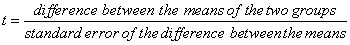

Result Explanations
In addition to the numerical results, expanded explanations of the results may also appear. You can enable or disable this explanatory text in the Options dialog box.
Normality Test. Normality test results show whether the data passed or failed the test of the assumption that the samples were drawn from normal populations and the P value calculated by the test. All parametric tests require normally distributed source populations.
This result is set in the Options for t-test dialog box.
Equal Variance Test. Equal Variance test results display whether or not the data passed or failed the test of the assumption that the samples were drawn from populations with the same variance and the P value calculated by the test. Equal variance of the source population is assumed for all parametric tests.
Summary Table. SigmaPlot can generate a summary table listing the sizes N for the two samples, number of missing values, means, standard deviations, and the standard error of the means (SEM). This result is displayed unless you disable Summary Table in the Options for t-test dialog box.
- N (Size). The number of non-missing observations for that column or group.
- Missing. The number of missing values for that column or group.
- Mean. The average value for the column. If the observations are normally distributed the mean is the center of the distribution.
- Standard Deviation. A measure of variability. If the observations are normally distributed, about two-thirds will fall within one standard deviation above or below the mean, and about 95% of the observations will fall within two standard deviations above or below the mean.
- Standard Error of the Mean. A measure of the approximation with which the mean computed from the sample approximates the true population mean.

The standard error of the difference is a measure of the precision with which this difference can be estimated.
You can conclude from "large" absolute values of t that the samples were drawn from different populations. A large t indicates that the difference between the treatment group means is larger than what would be expected from sampling variability alone (for example, that the differences between the two groups are statistically significant). A small t (near 0) indicates that there is no significant difference between the samples.
- Degrees of Freedom. Degrees of freedom represents the sample sizes, which affect the ability of the t-test to detect differences in the means. As degrees of freedom (sample sizes) increase, the ability to detect a difference with a smaller t increases.
- P Value. The P value is the probability of being wrong in concluding that there is a true difference in the two groups (for example, the probability of falsely rejecting the null hypothesis, or committing a Type I error, based on t). The smaller the P value, the greater the probability that the samples are drawn from different populations. Traditionally, you can conclude there is a significant difference when P < 0.05.
Confidence Interval for the Difference of the Means. If the confidence interval does not include zero, you can conclude that there is a significant difference between the proportions with the level of confidence specified. This can also be described as P < α (alpha), where α is the acceptable probability of incorrectly concluding that there is a difference.
The level of confidence is adjusted in the Options for t-test dialog box; this is typically 100(1-α), or 95%. Larger values of confidence result in wider intervals and smaller values in smaller intervals. For a further explanation of α, see Power below. This result is set Options for t-test dialog box.
Power. The power, or sensitivity, of a t-test is the probability that the test will detect a difference between the groups if there really is a difference. The closer the power is to 1, the more sensitive the test.
t-test power is affected by the sample size of both groups, the chance of erroneously reporting a difference, α (alpha), the difference of the means, and the standard deviation.
This result is set in the Options for t-test dialog box.
Alpha. Alpha (α) is the acceptable probability of incorrectly concluding that there is a difference. An a error is also called a Type I error (a Type I error is when you reject the hypothesis of no effect when this hypothesis is true).
The α value is set in the Options for t-test dialog box; a value of α = 0.05 indicates that a one in twenty chance of error is acceptable, or that you are willing to conclude there is a significant difference when P < 0.05.
Smaller values of α result in stricter requirements before concluding there is a significant difference, but a greater possibility of concluding there is no difference when one exists (a Type II error). Larger values of α make it easier to conclude that there is a difference but also increase the risk of reporting a false positive (a Type I error).